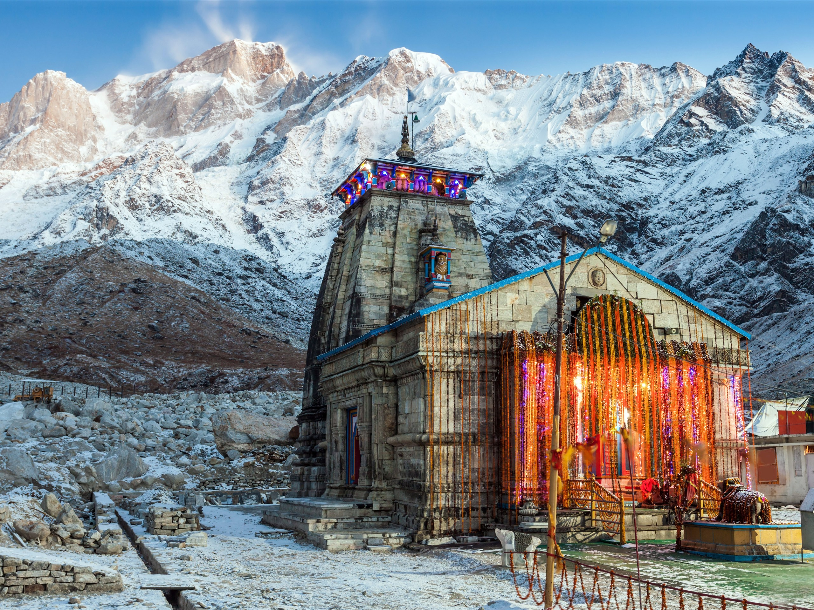

kedarnath
Kedarnath temple is one of the sacred pilgrimage centre in Northern India,
located on the bank of Mandakini river at an altitude of 3584 meters above
sea level. The historical name of this region is "Kedar Khand". Kedarnath
temple is a part of Char Dhams and Panch Kedar in Uttarakhand and one
of the 12 Jyotirlingas of Lord Shiva in India.
Click To Read More
")
Badrinath
Badarinath is one of the holy shrines for Vaishnavites among the 108 divya
desams incarnation of Lord Vishnu. Badrinath town is also the part of
Panch Badri temples including Yog Dhyan Badri, Bhavishya Badri, Adi Badri
and Vriddha Badri, along with Badrinath temple.
Click To Read More
")
Gangotri Dham
Gangotri Dham, located at the height of 3,100
meters (approx.) on the Himalayan range in
Uttarkashi district of Uttarakhand, holds a very
special place in the hearts of Hindus.
Click To Read More

Yamunotri
Yamunotri is a part of Char Dham (along with Gangotri, Kedarnath and Badrinath), the four most revered Hindu pilgrimages in the Himalayas.
Click To Read More